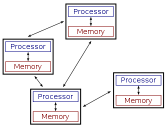

Транзакции
в распределенных системах
Денис Рысцов / @rystsov
Мат-Мех → Yandex → Grid Dynamics → Amazon
Сегодня в программе
- Распределенные системы (Big Data, Reliability)
- Проблемы согласованности:
- в распределенных системах (CAP)
- в базах данных (ACID)
- Транзакции
Распределенные транзакции
- Sagas (1987)
- Percolator (2010)
- RAMP (2014)
Что такое распределенная система?

Примеры систем
- Web-сайты после 2005 г.
- Торренты
- Bitcoin
- NoSQL базы данных
Зачем нужны распределенные системы?
Существуют задачи, которые по другому не решаются
Примеры
- Слишком много данных (Amazon EBS 16TB)
- Слишком много клиентов (DO 3000 msg/s по 10KB)
- Надежность системы ограничена надежностью платформы, на которой она работает (молнии, уборщицы, экскаваторы)
Основная проблема распр. систем
Отсутствие единой картины мира
Виды согласованности
- Атомарность (при шардиновании)
- Линеаризуемость (при репликации)
Отсутствие согласованности называется eventual consistency
Несогласованность опасна
- Flexcoin (2014, 0.5MM lost)
- Poloniex (12% BTC lost)
- Facebook, накрутка ревью (bounty $3000)
Как достичь линеаризуемости?
- не реплицировать
- использовать:
- протоколы консенсуса (Raft, Paxos)
- синхронную репликацию (MySQL)
- одного писателя и кворумную репликацию (Cassandra)
Проблемы согласованности есть не только в распределенных системах, но и в классических базах данных
Какая проблема с последовательным применением обновлений?
Производительность
Обновления в базах данных
- запись в WAL
- поиск в B-дереве
- изменение данных
- перестройка индексов
Уровни изоляции
- serializable / serializable snapshot isolation
- repeatable read / snapshot isolation
- read committed
Аномалии согласованности
- lost updates
- read skew
- write skew
Не все так плохо
- не во всех приложениях есть сценарии, на которых заметны read/write skew аномалии
- иногда lost update аномалии объяснимы с точки зрения пользователя
- наблюдаемые аномалии могут не приносить ущерб для бизнеса
Транзакции в распределенных системах
- не рассматриваем транзакции в реплицированных системах
- от шарда ожидаем линеаризуемость
Сага транзакции
| Статья |
Sagas (1987) |
| Изоляция |
Serializable |
| Отзывчивость |
1RT |
| Длительность |
2.5RT |
| Поддерживается |
сервером |